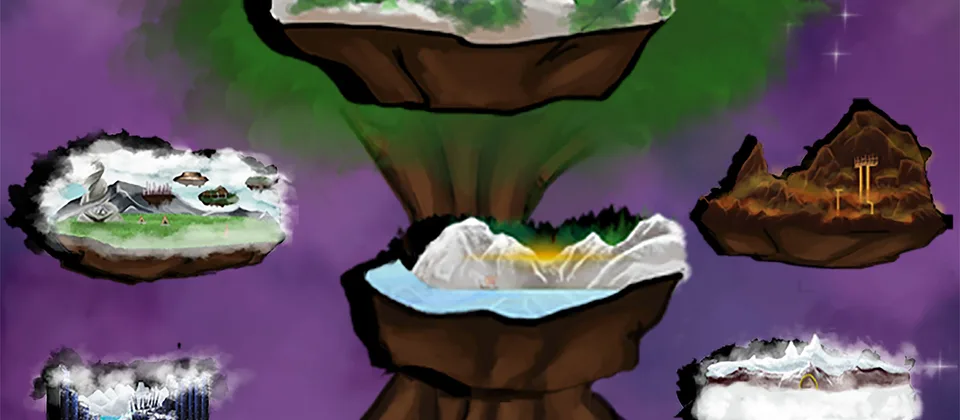

Charge shots
A charged ballista shot is better for bigger monsters and packed groups.
The Last Stand
Monsters attack from both sides. Shoot with the ballista, place traps, and survive every wave.
Play or Download
Basics
Defense
A charged ballista shot is better for bigger monsters and packed groups.
Do not spend everything on one side because enemies can attack from either direction.
Reload during quiet moments so you are not empty when enemies reach the tower.